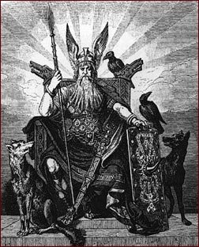

La mitología griega es el conjunto de mitos y leyendas pertenecientes a la cultura de la Antigua Grecia, que tratan de sus dioses y héroes, la naturaleza del mundo, los orígenes y el significado de sus propios cultos y prácticas rituales. Formaban parte de la religión de la Antigua Grecia, que tenía como objeto de culto básicamente a los dioses olímpicos. Los investigadores modernos recurren a los mitos y los estudian en un intento por arrojar luz sobre las instituciones religiosas y políticas de la antigua Grecia y su civilización, así como para entender mejor la naturaleza de la propia creación de los mitos.
La mitologia griega es el conjunto de mitos y leyendas de pertenencia a la cultura de la antigua grecia, que tratan de sus dioses y heroes salvadores, que mayormente son mas de 1, la naturaleza del mundo, los origenes y el significado de sus propios cultos y rituales
se cree que estos mitos y leyendas tuvieron su origen en el ano 3000 a.c en creta, sus habitantes creian en la fuerzas naturales y ciertos objetos estaban dotados de espiritus y/o magia, dando lugar a las primeras leyendas.
DIOSES GRIEGOS
Las fuentes de la mitología nórdica son (principalmente) las Eddas, la Edda Mayor y la Edda menor.
La Edda Mayor, que es también la más antigua, es una colección de poemas anónimos. El idioma es islandés y data del año 1000 o incluso antes. Se pueden dividir los poemas en dos grupos: poemas míticos que hablan sobre la creación y el fin del mundo, y los poemas heroicos que hablan principalmente sobre Odin y Thor.
La Edda Menor es también llamada la Edda de Snorre Sturluson quien lo escribió alrededor de 1220. Es un manual de poesía para los escaldos. Consta de tres partes:
Gylfaginning es una descripción de la mitología, es decir el mito de la creación del mundo, de los dioses y de sus vidas. El propósito de contar los mitos era dar a los escaldos la base de su poesía.
Skáldskaparmál es una presentación sistemática del lenguaje de los escaldos, y contiene asimismo muchas citas de poemas de escaldos denominados y anónimos.
Hattal significa registro de metros. Consta de un poema de 102 estrofas, cada una con su propia peculiaridad métrica o lingüística, mostrando así las reglas del lenguaje poético.
MITOLOGIA NORDICA

-DOCUMENTAL-